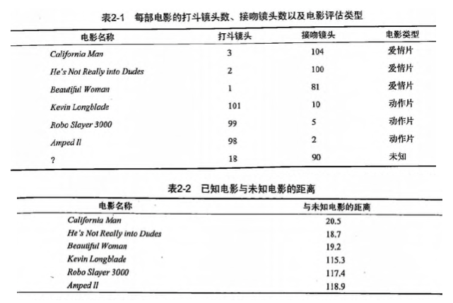
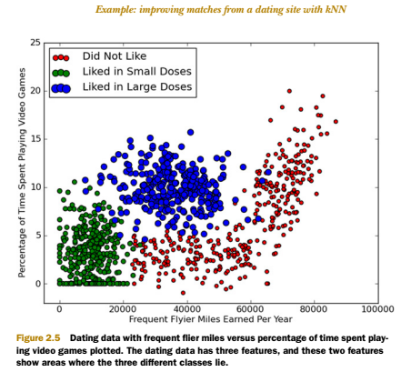
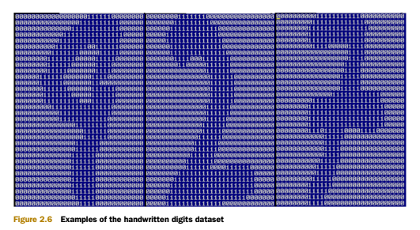

第2章 k-近邻算法
KNN 概述
k-近邻（kNN, k-NearestNeighbor）算法是一种基本分类与回归方法，我们这里只讨论分类问题中的 k-近邻算法。
一句话总结：近朱者赤近墨者黑！
k 近邻算法的输入为实例的特征向量，对应于特征空间的点；输出为实例的类别，可以取多类。k 近邻算法假设给定一个训练数据集，其中的实例类别已定。分类时，对新的实例，根据其 k 个最近邻的训练实例的类别，通过多数表决等方式进行预测。因此，k近邻算法不具有显式的学习过程。
k 近邻算法实际上利用训练数据集对特征向量空间进行划分，并作为其分类的“模型”。 k值的选择、距离度量以及分类决策规则是k近邻算法的三个基本要素。
KNN 场景
电影可以按照题材分类，那么如何区分 动作片 和 爱情片 呢？
1. 动作片：打斗次数更多
2. 爱情片：亲吻次数更多
基于电影中的亲吻、打斗出现的次数，使用 k-近邻算法构造程序，就可以自动划分电影的题材类型。

现在根据上面我们得到的样本集中所有电影与未知电影的距离，按照距离递增排序，可以找到 k 个距离最近的电影。
假定 k=3，则三个最靠近的电影依次是， He's Not Really into Dudes 、 Beautiful Woman 和 California Man。
knn 算法按照距离最近的三部电影的类型，决定未知电影的类型，而这三部电影全是爱情片，因此我们判定未知电影是爱情片。
KNN 原理
KNN 工作原理
- 假设有一个带有标签的样本数据集（训练样本集），其中包含每条数据与所属分类的对应关系。
- 输入没有标签的新数据后，将新数据的每个特征与样本集中数据对应的特征进行比较。
- 计算新数据与样本数据集中每条数据的距离。
- 对求得的所有距离进行排序（从小到大，越小表示越相似）。
- 取前 k （k 一般小于等于 20 ）个样本数据对应的分类标签。
- 求 k 个数据中出现次数最多的分类标签作为新数据的分类。
KNN 通俗理解
给定一个训练数据集，对新的输入实例，在训练数据集中找到与该实例最邻近的 k 个实例，这 k 个实例的多数属于某个类，就把该输入实例分为这个类。
KNN 开发流程
收集数据：任何方法
准备数据：距离计算所需要的数值，最好是结构化的数据格式
分析数据：任何方法
训练算法：此步骤不适用于 k-近邻算法
测试算法：计算错误率
使用算法：输入样本数据和结构化的输出结果，然后运行 k-近邻算法判断输入数据分类属于哪个分类，最后对计算出的分类执行后续处理
KNN 算法特点
优点：精度高、对异常值不敏感、无数据输入假定
缺点：计算复杂度高、空间复杂度高
适用数据范围：数值型和标称型
KNN 项目案例
项目案例1: 优化约会网站的配对效果
完整代码地址: https://github.com/apachecn/AiLearning/blob/master/src/py2.x/ml/2.KNN/kNN.py
项目概述
海伦使用约会网站寻找约会对象。经过一段时间之后，她发现曾交往过三种类型的人: 不喜欢的人 魅力一般的人 * 极具魅力的人
她希望： 1. 工作日与魅力一般的人约会 2. 周末与极具魅力的人约会 3. 不喜欢的人则直接排除掉
现在她收集到了一些约会网站未曾记录的数据信息，这更有助于匹配对象的归类。
开发流程
收集数据：提供文本文件
准备数据：使用 Python 解析文本文件
分析数据：使用 Matplotlib 画二维散点图
训练算法：此步骤不适用于 k-近邻算法
测试算法：使用海伦提供的部分数据作为测试样本。
测试样本和非测试样本的区别在于：
测试样本是已经完成分类的数据，如果预测分类与实际类别不同，则标记为一个错误。
使用算法：产生简单的命令行程序，然后海伦可以输入一些特征数据以判断对方是否为自己喜欢的类型。
收集数据：提供文本文件
海伦把这些约会对象的数据存放在文本文件 datingTestSet2.txt 中，总共有 1000 行。海伦约会的对象主要包含以下 3 种特征：
- 每年获得的飞行常客里程数
- 玩视频游戏所耗时间百分比
- 每周消费的冰淇淋公升数
文本文件数据格式如下：
40920 8.326976 0.953952 3
14488 7.153469 1.673904 2
26052 1.441871 0.805124 1
75136 13.147394 0.428964 1
38344 1.669788 0.134296 1
准备数据：使用 Python 解析文本文件
将文本记录转换为 NumPy 的解析程序
```python def file2matrix(filename): """ Desc: 导入训练数据 parameters: filename: 数据文件路径 return: 数据矩阵 returnMat 和对应的类别 classLabelVector """ fr = open(filename) # 获得文件中的数据行的行数 numberOfLines = len(fr.readlines()) # 生成对应的空矩阵 # 例如：zeros(2，3)就是生成一个 2*3的矩阵，各个位置上全是 0 returnMat = zeros((numberOfLines, 3)) # prepare matrix to return classLabelVector = [] # prepare labels return fr = open(filename) index = 0 for line in fr.readlines(): # str.strip([chars]) --返回已移除字符串头尾指定字符所生成的新字符串 line = line.strip() # 以 '\t' 切割字符串 listFromLine = line.split('\t') # 每列的属性数据 returnMat[index, :] = listFromLine[0:3] # 每列的类别数据，就是 label 标签数据 classLabelVector.append(int(listFromLine[-1])) index += 1 # 返回数据矩阵returnMat和对应的类别classLabelVector return returnMat, classLabelVector
> 分析数据：使用 Matplotlib 画二维散点图
```python
import matplotlib
import matplotlib.pyplot as plt
fig = plt.figure()
ax = fig.add_subplot(111)
ax.scatter(datingDataMat[:, 0], datingDataMat[:, 1], 15.0*array(datingLabels), 15.0*array(datingLabels))
plt.show()
下图中采用矩阵的第一和第二列属性得到很好的展示效果，清晰地标识了三个不同的样本分类区域，具有不同爱好的人其类别区域也不同。

- 归一化数据 （归一化是一个让权重变为统一的过程，更多细节请参考： https://www.zhihu.com/question/19951858 ）
| 序号 | 玩视频游戏所耗时间百分比 | 每年获得的飞行常客里程数 | 每周消费的冰淇淋公升数 | 样本分类 |
|---|---|---|---|---|
| 1 | 0.8 | 400 | 0.5 | 1 |
| 2 | 12 | 134 000 | 0.9 | 3 |
| 3 | 0 | 20 000 | 1.1 | 2 |
| 4 | 67 | 32 000 | 0.1 | 2 |
样本3和样本4的距离： $$\sqrt{(0-67)^2 + (20000-32000)^2 + (1.1-0.1)^2 }$$
归一化特征值，消除特征之间量级不同导致的影响
归一化定义： 我是这样认为的，归一化就是要把你需要处理的数据经过处理后（通过某种算法）限制在你需要的一定范围内。首先归一化是为了后面数据处理的方便，其次是保正程序运行时收敛加快。 方法有如下：
1) 线性函数转换，表达式如下：
y=(x-MinValue)/(MaxValue-MinValue)
说明：x、y分别为转换前、后的值，MaxValue、MinValue分别为样本的最大值和最小值。
2) 对数函数转换，表达式如下：
y=log10(x)
说明：以10为底的对数函数转换。
如图：

3) 反余切函数转换，表达式如下：
y=arctan(x)*2/PI
如图：

4) 式(1)将输入值换算为[-1,1]区间的值，在输出层用式(2)换算回初始值，其中和分别表示训练样本集中负荷的最大值和最小值。
在统计学中，归一化的具体作用是归纳统一样本的统计分布性。归一化在0-1之间是统计的概率分布，归一化在-1--+1之间是统计的坐标分布。
def autoNorm(dataSet):
"""
Desc:
归一化特征值，消除特征之间量级不同导致的影响
parameter:
dataSet: 数据集
return:
归一化后的数据集 normDataSet. ranges和minVals即最小值与范围，并没有用到
归一化公式：
Y = (X-Xmin)/(Xmax-Xmin)
其中的 min 和 max 分别是数据集中的最小特征值和最大特征值。该函数可以自动将数字特征值转化为0到1的区间。
"""
# 计算每种属性的最大值、最小值、范围
minVals = dataSet.min(0)
maxVals = dataSet.max(0)
# 极差
ranges = maxVals - minVals
normDataSet = zeros(shape(dataSet))
m = dataSet.shape[0]
# 生成与最小值之差组成的矩阵
normDataSet = dataSet - tile(minVals, (m, 1))
# 将最小值之差除以范围组成矩阵
normDataSet = normDataSet / tile(ranges, (m, 1)) # element wise divide
return normDataSet, ranges, minVals
训练算法：此步骤不适用于 k-近邻算法
因为测试数据每一次都要与全量的训练数据进行比较，所以这个过程是没有必要的。
kNN 算法伪代码：
对于每一个在数据集中的数据点：
计算目标的数据点（需要分类的数据点）与该数据点的距离
将距离排序：从小到大
选取前K个最短距离
选取这K个中最多的分类类别
返回该类别来作为目标数据点的预测值
def classify0(inX, dataSet, labels, k):
dataSetSize = dataSet.shape[0]
#距离度量 度量公式为欧氏距离
diffMat = tile(inX, (dataSetSize,1)) – dataSet
sqDiffMat = diffMat**2
sqDistances = sqDiffMat.sum(axis=1)
distances = sqDistances**0.5
#将距离排序：从小到大
sortedDistIndicies = distances.argsort()
#选取前K个最短距离， 选取这K个中最多的分类类别
classCount={}
for i in range(k)：
voteIlabel = labels[sortedDistIndicies[i]]
classCount[voteIlabel] = classCount.get(voteIlabel,0) + 1
sortedClassCount = sorted(classCount.iteritems(), key=operator.itemgetter(1), reverse=True)
return sortedClassCount[0][0]
测试算法：使用海伦提供的部分数据作为测试样本。如果预测分类与实际类别不同，则标记为一个错误。
kNN 分类器针对约会网站的测试代码
def datingClassTest():
"""
Desc:
对约会网站的测试方法
parameters:
none
return:
错误数
"""
# 设置测试数据的的一个比例（训练数据集比例=1-hoRatio）
hoRatio = 0.1 # 测试范围,一部分测试一部分作为样本
# 从文件中加载数据
datingDataMat, datingLabels = file2matrix('db/2.KNN/datingTestSet2.txt') # load data setfrom file
# 归一化数据
normMat, ranges, minVals = autoNorm(datingDataMat)
# m 表示数据的行数，即矩阵的第一维
m = normMat.shape[0]
# 设置测试的样本数量， numTestVecs:m表示训练样本的数量
numTestVecs = int(m * hoRatio)
print 'numTestVecs=', numTestVecs
errorCount = 0.0
for i in range(numTestVecs):
# 对数据测试
classifierResult = classify0(normMat[i, :], normMat[numTestVecs:m, :], datingLabels[numTestVecs:m], 3)
print "the classifier came back with: %d, the real answer is: %d" % (classifierResult, datingLabels[i])
if (classifierResult != datingLabels[i]): errorCount += 1.0
print "the total error rate is: %f" % (errorCount / float(numTestVecs))
print errorCount
使用算法：产生简单的命令行程序，然后海伦可以输入一些特征数据以判断对方是否为自己喜欢的类型。
约会网站预测函数
def classifyPerson():
resultList = ['not at all', 'in small doses', 'in large doses']
percentTats = float(raw_input("percentage of time spent playing video games ?"))
ffMiles = float(raw_input("frequent filer miles earned per year?"))
iceCream = float(raw_input("liters of ice cream consumed per year?"))
datingDataMat, datingLabels = file2matrix('datingTestSet2.txt')
normMat, ranges, minVals = autoNorm(datingDataMat)
inArr = array([ffMiles, percentTats, iceCream])
classifierResult = classify0((inArr-minVals)/ranges,normMat,datingLabels, 3)
print "You will probably like this person: ", resultList[classifierResult - 1]
实际运行效果如下:
>>> classifyPerson()
percentage of time spent playing video games?10
frequent flier miles earned per year?10000
liters of ice cream consumed per year?0.5
You will probably like this person: in small doses
项目案例2: 手写数字识别系统
完整代码地址: https://github.com/apachecn/AiLearning/blob/master/src/py2.x/ml/2.KNN/kNN.py
项目概述
构造一个能识别数字 0 到 9 的基于 KNN 分类器的手写数字识别系统。
需要识别的数字是存储在文本文件中的具有相同的色彩和大小：宽高是 32 像素 * 32 像素的黑白图像。
开发流程
收集数据：提供文本文件。
准备数据：编写函数 img2vector(), 将图像格式转换为分类器使用的向量格式
分析数据：在 Python 命令提示符中检查数据，确保它符合要求
训练算法：此步骤不适用于 KNN
测试算法：编写函数使用提供的部分数据集作为测试样本，测试样本与非测试样本的
区别在于测试样本是已经完成分类的数据，如果预测分类与实际类别不同，
则标记为一个错误
使用算法：本例没有完成此步骤，若你感兴趣可以构建完整的应用程序，从图像中提取
数字，并完成数字识别，美国的邮件分拣系统就是一个实际运行的类似系统
收集数据: 提供文本文件
目录 trainingDigits 中包含了大约 2000 个例子，每个例子内容如下图所示，每个数字大约有 200 个样本；目录 testDigits 中包含了大约 900 个测试数据。

准备数据: 编写函数 img2vector(), 将图像文本数据转换为分类器使用的向量
将图像文本数据转换为向量
def img2vector(filename):
returnVect = zeros((1,1024))
fr = open(filename)
for i in range(32):
lineStr = fr.readline()
for j in range(32):
returnVect[0,32*i+j] = int(lineStr[j])
return returnVect
分析数据：在 Python 命令提示符中检查数据，确保它符合要求
在 Python 命令行中输入下列命令测试 img2vector 函数，然后与文本编辑器打开的文件进行比较:
>>> testVector = kNN.img2vector('testDigits/0_13.txt')
>>> testVector[0,0:32]
array([0., 0., 0., 0., 0., 0., 0., 0., 0., 0., 0., 0., 0., 0., 1., 1., 1., 1., 0., 0., 0., 0., 0., 0., 0., 0., 0., 0., 0., 0., 0.])
>>> testVector[0,32:64]
array([0., 0., 0., 0., 0., 0., 0., 0., 0., 0., 0., 0., 1., 1., 1., 1., 1., 1., 1., 0., 0., 0., 0., 0., 0., 0., 0., 0., 0., 0., 0.])
训练算法：此步骤不适用于 KNN
因为测试数据每一次都要与全量的训练数据进行比较，所以这个过程是没有必要的。
测试算法：编写函数使用提供的部分数据集作为测试样本，如果预测分类与实际类别不同，则标记为一个错误
def handwritingClassTest():
# 1. 导入训练数据
hwLabels = []
trainingFileList = listdir('db/2.KNN/trainingDigits') # load the training set
m = len(trainingFileList)
trainingMat = zeros((m, 1024))
# hwLabels存储0～9对应的index位置， trainingMat存放的每个位置对应的图片向量
for i in range(m):
fileNameStr = trainingFileList[i]
fileStr = fileNameStr.split('.')[0] # take off .txt
classNumStr = int(fileStr.split('_')[0])
hwLabels.append(classNumStr)
# 将 32*32的矩阵->1*1024的矩阵
trainingMat[i, :] = img2vector('db/2.KNN/trainingDigits/%s' % fileNameStr)
# 2. 导入测试数据
testFileList = listdir('db/2.KNN/testDigits') # iterate through the test set
errorCount = 0.0
mTest = len(testFileList)
for i in range(mTest):
fileNameStr = testFileList[i]
fileStr = fileNameStr.split('.')[0] # take off .txt
classNumStr = int(fileStr.split('_')[0])
vectorUnderTest = img2vector('db/2.KNN/testDigits/%s' % fileNameStr)
classifierResult = classify0(vectorUnderTest, trainingMat, hwLabels, 3)
print "the classifier came back with: %d, the real answer is: %d" % (classifierResult, classNumStr)
if (classifierResult != classNumStr): errorCount += 1.0
print "\nthe total number of errors is: %d" % errorCount
print "\nthe total error rate is: %f" % (errorCount / float(mTest))
使用算法：本例没有完成此步骤，若你感兴趣可以构建完整的应用程序，从图像中提取数字，并完成数字识别，美国的邮件分拣系统就是一个实际运行的类似系统。
KNN 小结
KNN 是什么？定义： 监督学习？ 非监督学习？
KNN 是一个简单的无显示学习过程，非泛化学习的监督学习模型。在分类和回归中均有应用。
基本原理
简单来说： 通过距离度量来计算查询点（query point）与每个训练数据点的距离，然后选出与查询点（query point）相近的K个最邻点（K nearest neighbors），使用分类决策来选出对应的标签来作为该查询点的标签。
KNN 三要素
K, K的取值
对查询点标签影响显著（效果拔群）。k值小的时候 近似误差小，估计误差大。 k值大 近似误差大，估计误差小。
如果选择较小的 k 值，就相当于用较小的邻域中的训练实例进行预测，“学习”的近似误差（approximation error）会减小，只有与输入实例较近的（相似的）训练实例才会对预测结果起作用。但缺点是“学习”的估计误差（estimation error）会增大，预测结果会对近邻的实例点非常敏感。如果邻近的实例点恰巧是噪声，预测就会出错。换句话说，k 值的减小就意味着整体模型变得复杂，容易发生过拟合。
如果选择较大的 k 值，就相当于用较大的邻域中的训练实例进行预测。其优点是可以减少学习的估计误差。但缺点是学习的近似误差会增大。这时与输入实例较远的（不相似的）训练实例也会对预测起作用，使预测发生错误。 k 值的增大就意味着整体的模型变得简单。
太大太小都不太好，可以用交叉验证（cross validation）来选取适合的k值。
近似误差和估计误差，请看这里：https://www.zhihu.com/question/60793482
距离度量 Metric/Distance Measure
距离度量 通常为 欧式距离（Euclidean distance），还可以是 Minkowski 距离 或者 曼哈顿距离。也可以是 地理空间中的一些距离公式。（更多细节可以参看 sklearn 中 valid_metric 部分）
分类决策 （decision rule）
分类决策 在 分类问题中 通常为通过少数服从多数 来选取票数最多的标签，在回归问题中通常为 K个最邻点的标签的平均值。
算法：（sklearn 上有三种）
Brute Force 暴力计算/线性扫描
KD Tree 使用二叉树根据数据维度来平分参数空间。
Ball Tree 使用一系列的超球体来平分训练数据集。
树结构的算法都有建树和查询两个过程。Brute Force 没有建树的过程。
算法特点：
优点： High Accuracy， No Assumption on data， not sensitive to outliers
缺点：时间和空间复杂度 高
适用范围： continuous values and nominal values
相似同源产物：
radius neighbors 根据制定的半径来找寻邻点
影响算法因素：
N 数据集样本数量(number of samples)， D 数据维度 (number of features)
总消耗：
Brute Force: O[DN^2]
此处考虑的是最蠢的方法：把所有训练的点之间的距离都算一遍。当然有更快的实现方式, 比如 O(ND + kN) 和 O(NDK) , 最快的是 O[DN] 。感兴趣的可以阅读这个链接： k-NN computational complexity
KD Tree: O[DN log(N)]
Ball Tree: O[DN log(N)] 跟 KD Tree 处于相同的数量级，虽然建树时间会比 KD Tree 久一点，但是在高结构的数据，甚至是高纬度的数据中，查询速度有很大的提升。
查询所需消耗:
Brute Force: O[DN]
KD Tree: 当维度比较小的时候， 比如 D<20, O[Dlog(N)] 。相反，将会趋向于 O[DN]
Ball Tree: O[Dlog(N)]
当数据集比较小的时候，比如 N<30的时候，Brute Force 更有优势。
Intrinsic Dimensionality(本征维数) 和 Sparsity（稀疏度）
数据的 intrinsic dimensionality 是指数据所在的流形的维数 d < D , 在参数空间可以是线性或非线性的。稀疏度指的是数据填充参数空间的程度(这与“稀疏”矩阵中使用的概念不同, 数据矩阵可能没有零项, 但是从这个意义上来讲,它的结构 仍然是 "稀疏" 的)。
Brute Force 的查询时间不受影响。
对于 KD Tree 和 Ball Tree的查询时间, 较小本征维数且更稀疏的数据集的查询时间更快。KD Tree 的改善由于通过坐标轴来平分参数空间的自身特性 没有Ball Tree 显著。
k的取值 (k 个邻点)
Brute Force 的查询时间基本不受影响。
但是对于 KD Tree 和 Ball Tree , k越大，查询时间越慢。
k 在N的占比较大的时候，使用 Brute Force 比较好。
Number of Query Points （查询点数量， 即测试数据的数量）
查询点较少的时候用Brute Force。查询点较多的时候可以使用树结构算法。
关于 sklearn 中模型的一些额外干货：
如果KD Tree，Ball Tree 和Brute Force 应用场景傻傻分不清楚，可以直接使用 含有algorithm='auto'的模组。 algorithm='auto' 自动为您选择最优算法。 有 regressor 和 classifier 可以来选择。
metric/distance measure 可以选择。 另外距离 可以通过weight 来加权。
leaf size 对KD Tree 和 Ball Tree 的影响
建树时间：leaf size 比较大的时候，建树时间也就快点。
查询时间： leaf size 太大太小都不太好。如果leaf size 趋向于 N（训练数据的样本数量），算法其实就是 brute force了。如果leaf size 太小了，趋向于1，那查询的时候 遍历树的时间就会大大增加。leaf size 建议的数值是 30，也就是默认值。
内存： leaf size 变大，存树结构的内存变小。
Nearest Centroid Classifier
分类决策是哪个标签的质心与测试点最近，就选哪个标签。
该模型假设在所有维度中方差相同。 是一个很好的base line。
进阶版： Nearest Shrunken Centroid
可以通过shrink_threshold来设置。
作用： 可以移除某些影响分类的特征，例如移除噪音特征的影响
- 作者：羊三 小瑶
- GitHub地址: https://github.com/apachecn/AiLearning
- 版权声明：欢迎转载学习 => 请标注信息来源于 ApacheCN